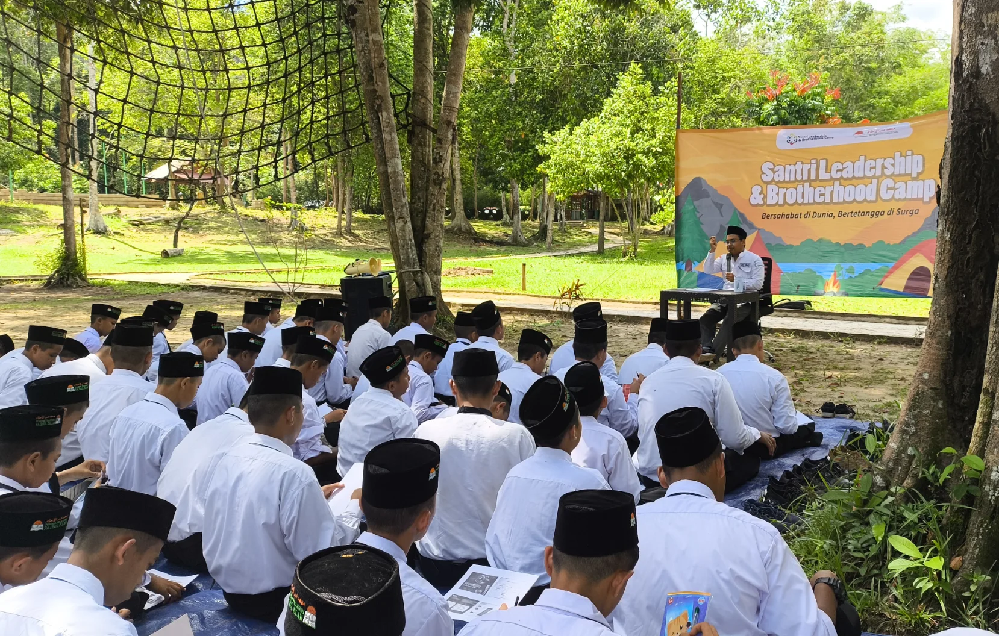
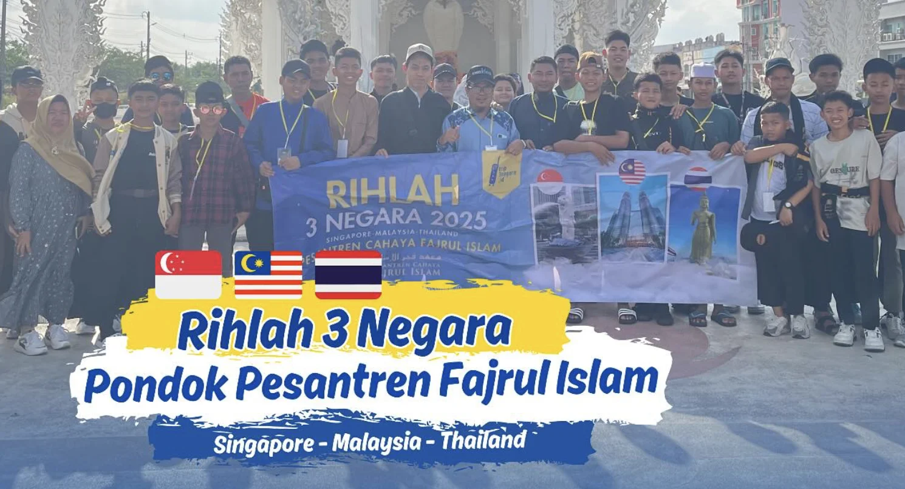

Al-Qur’an
Tahfiz Al-Qur’an
Menguatkan kedekatan dengan Al-Qur’an melalui pendidikan tahfiz.
Sebaran alumni
Perjalanan belajar terus berlanjut. Alumni Pesantren Cahaya Fajrul Islam tersebar di perguruan tinggi dan lembaga pendidikan di Indonesia maupun luar negeri.
Universitas Al-Azhar Mesir
Universitas Pendidikan Indonesia, Bandung
Universitas Muhammadiyah Yogyakarta
Universitas Bangka Belitung
Universitas Negeri Semarang
Universitas Ari Ginanjar
Universitas Islam Negeri SGD, Bandung
Universitas Muhammadiyah Bandung
Dan berbagai lembaga pendidikan lainnya.
Selamat datang di Cahaya
Pesantren Cahaya Fajrul Islam hadir di Kabupaten Belitung untuk mendampingi tumbuhnya pribadi yang mencintai Allah, berakhlak mulia, berhati bersih, berakal cerdas, serta memiliki tubuh yang sehat dan berdaya.
Ilmu, karakter, dan kehidupan sehari-hari berjalan bersama. Inilah arah pendidikan yang kami sebut karakter CAHAYA.

Pengasuh
Akrab disapa “Abah Multazam”
Pesantren Cahaya Fajrul Islam diasuh langsung oleh Syekh Multazam Zakaria. Beliau memperoleh gelar Syekh dan izin sebagai Syekh Mursyid silsilah ke-39 setelah menamatkan pendidikan ruhani dalam Thariqah Naqsyabandiyah Khalidiyah di bawah bimbingan Syekh Zainal Abidin.
Rangkaian silsilah kemursyidan beliau berlanjut dari Syekh Zainal Abidin kepada Syekh Karminanto, Buya Dr. Syekh Musytari, hingga Prof. Dr. Syekh Jalaluddin (PPTI 1920), yang silsilah kemursyidannya berasal dari jalur Abi Jabal Qubais, Mekah.
Menempuh pendidikan di pesantren bercorak tradisional, modern, dan tahfiz, serta pendidikan tinggi dari sarjana hingga doktoral (S3) dalam bidang Manajemen Bisnis Syariah, Manajemen Pendidikan, dan Pendidikan Agama Islam.
Pendidikan talaqqi ditempuh hingga memperoleh sanad Al-Qur’an, hadits, dan ilmu keislaman lainnya. Beliau juga memiliki sertifikat kompetensi dalam neurosains, parenting, transforming behavior, dan pengelolaan lembaga wakaf.
Pokok pemikirannya hadir dalam sejumlah buku:
Kurikulum keilmuan
Tahfiz Al-Qur’an, kitab kuning, dan kurikulum nasional dipelajari beriringan. Bekal untuk menjalani kehidupan dan melanjutkan pendidikan di dalam maupun luar negeri.
Menguatkan kedekatan dengan Al-Qur’an melalui pendidikan tahfiz.
Mendalami khazanah keilmuan Islam sebagai fondasi pemahaman agama.
Mengembangkan keilmuan untuk melanjutkan pendidikan dan menghadapi kehidupan.
Program Penanaman Karakter
Pesantren Cahaya Fajrul Islam merumuskan karakter CAHAYA sebagai hasil pendidikan yang diharapkan. Lima dimensinya tumbuh melalui pendampingan, pembiasaan, dan pengalaman bersama.
Spiritual
Relasional
Emosional
Intelektual
Fisik
Delapan program berikut merupakan bagian dari Program Penanaman Karakter CAHAYA.
Penanaman Karakter CAHAYA
Pendampingan personal setiap pekan
Mentoring personal setiap pekan: refleksi karakter CAHAYA, apresiasi, evaluasi, dan target perbaikan yang dipantau melalui jurnal harian.
Penanaman Karakter CAHAYA
Persaudaraan dan pembinaan
Kelompok persaudaraan dan pembinaan untuk melatih kehidupan sosial, kerja sama, kepemimpinan, dan persahabatan.
Penanaman Karakter CAHAYA
Kesadaran dan perbaikan berkelanjutan
Penanganan pelanggaran berbasis data dan proses konseling terstandar untuk menumbuhkan kesadaran serta perbaikan berkelanjutan.
Penanaman Karakter CAHAYA
Kebiasaan baik dalam keseharian
Pendampingan dan pembiasaan sepanjang hari melalui program terjadwal untuk menumbuhkan disiplin dan kebiasaan baik.
Penanaman Karakter CAHAYA
Menguatkan capaian kebaikan
Penghargaan rutin atas prestasi keilmuan dan karakter untuk menguatkan capaian kebaikan santri.

Penanaman Karakter CAHAYA
Mental, fisik, dan kepemimpinan
Menumbuhkan kekuatan mental, ketangguhan fisik, persahabatan, dan keterampilan dasar kepemimpinan.

Penanaman Karakter CAHAYA
Menyegarkan jiwa, memperluas pengalaman
Rekreasi dan pembelajaran di luar pesantren melalui rihlah, kunjungan industri, study tour, dan kegiatan lainnya.
Penanaman Karakter CAHAYA
Orang tua ikut mendampingi pertumbuhan
Orang tua ikut mendampingi pertumbuhan melalui tasmi’, santri mengajar, makan bersama, dzikir, dan pengajian.
Program Minat Bakat
Ruang bagi santri untuk menjelajah minat, melatih keterampilan, dan mengembangkan diri bersama teman.
Santri belajar menjadi jurnalis remaja sekaligus mengasah kemampuan digital: mulai dari riset dan penulisan tematik hingga mengolahnya menjadi produk jurnalistik digital melalui desain grafis, video editing, dan coding.
Sarana pengembangan diri bagi santri yang menyukai olahraga, terutama permainan sepak bola atau futsal.
Sarana pengembangan diri bagi santri yang menyukai olahraga tenis meja.
Sarana pengembangan diri bagi santri yang menyukai olahraga lari.
Sarana pengembangan diri bagi santri yang menyukai olah vokal dan alat musik tradisional, seperti rebana.
Sarana pengembangan diri bagi santri yang memiliki minat dalam bidang usaha, terutama santri kelas 11–12.
Sarana pengembangan diri bagi santri yang menyukai olahraga panahan, sekaligus untuk meningkatkan kemampuan fokus.
Melatih kedisiplinan dan cinta tanah air melalui kegiatan peraturan baris-berbaris.
Membekali santri dengan kemampuan bela diri saat dibutuhkan sekaligus menjaga kebugaran jasmani.
Digitalisasi Pesantren
Pesantren Cahaya Fajrul Islam telah mengimplementasikan digitalisasi pada sebagian besar operasional melalui CAHAYA App. Orang tua dapat mengikuti perkembangan ananda melalui informasi yang tersedia dalam aplikasi.
Orang tua dapat memantau kehadiran ananda dalam kegiatan belajar dan setiap program melalui CAHAYA App.
Hasil mentoring, capaian, serta target perbaikan atau peningkatan ananda setiap pekan dapat dipantau langsung oleh orang tua dari rumah melalui CAHAYA App.
Laporan perkembangan tahfiz ananda dapat dipantau setiap saat oleh orang tua dari rumah melalui CAHAYA App.
Orang tua dapat memantau transaksi keuangan santri melalui aplikasi yang disediakan, termasuk top up saldo dan riwayat belanja.
Dan beragam fitur lainnya untuk mendukung operasional pesantren serta keterhubungan dengan keluarga.
Jenjang Pendidikan
Pendidikan untuk santri putra dan putri, dari jenjang SMP hingga SMA.
Jenjang awal pembentukan karakter dan penguatan dasar keilmuan Islam bagi santri.

Jenjang lanjutan untuk memperdalam ilmu, memperluas wawasan, dan memantapkan kesiapan masa depan.
Lembaga pendidikan resmi di bawah naungan Kementerian Pendidikan dan Kementerian Agama Republik Indonesia.
Penerimaan Santri Baru (PSB) TA 2027/2028
Bersama Pesantren Cahaya Fajrul Islam, putra-putri Anda dibimbing dalam ilmu, adab, dan pembiasaan karakter Islami, dengan proses pendaftaran yang mudah dan biaya yang ringkas.
Biaya administrasi awal PSB.
Daftar lebih awal di Gelombang I untuk mendapatkan potongan biaya masuk paling besar.
Biaya awal masuk pesantren, sudah mencakup kebutuhan utama santri.
| No. | Uraian | Nominal |
|---|---|---|
| 1 | Daftar Ulang | Rp 1.000.000 |
| 2 | Infaq Pembangunan | Rp 4.000.000 |
| 3 | Kasur & Bantal | Rp 825.000 |
| 4 | Perawatan Fasilitas | Rp 500.000 |
| 5 | Meja Belajar | Rp 150.000 |
| 6 | Seragam 3 Pcs | Rp 800.000 |
| 7 | Ranjang + Lemari | Rp 1.250.000 |
| 8 | Sampul Rapot | Rp 100.000 |
| 9 | Kitab (Satu Tahun) | Rp 250.000 |
Perkiraan total biaya masuk setelah potongan, sesuai gelombang pendaftaran.
| Gelombang | Total Biaya Masuk | Potongan | Setelah Potongan |
|---|---|---|---|
| Gelombang I | Rp 8.875.000 | Rp 1.000.000 | Rp 7.875.000 |
| Gelombang II | Rp 8.875.000 | Rp 500.000 | Rp 8.375.000 |
| Gelombang III | Rp 8.875.000 | — | Rp 8.875.000 |
Biaya pendaftaran Rp 300.000 terpisah dari simulasi biaya masuk di atas.
Manfaatkan potongan Gelombang I dan siapkan pendaftaran sejak dini agar lebih hemat dan tenang.
Pembayaran dapat dilakukan sebanyak 3 kali cicilan/angsuran.
Proses pendaftaran mudah dan panduan lengkap.
Didampingi oleh tim PSB yang siap membantu dengan ramah.
Langkah berikutnya
Kenali alurnya, buat akun calon wali, lalu lengkapi data secara bertahap melalui portal PSB.
Pilih email atau nomor HP untuk membuat akun.
Lengkapi pendaftaran serta asesmen calon wali dan santri.
Pantau pengumuman jadwal melalui akun calon wali.
Hasil dapat dilihat di akun setelah diumumkan pengurus.
Informasi PSB sedang dilengkapi.
Jadwal dan persyaratan resmi akan diumumkan kemudian. Formulir dan asesmen di portal masih berupa contoh.
Silakan masuk ke portal PSB untuk melanjutkan pengisian data serta memantau jadwal dan hasil tes.
Rincian biaya tersedia di bagian biaya PSB. Jadwal pendaftaran sedang disiapkan. Pengumuman jadwal tes juga dapat dipantau melalui akun calon wali.